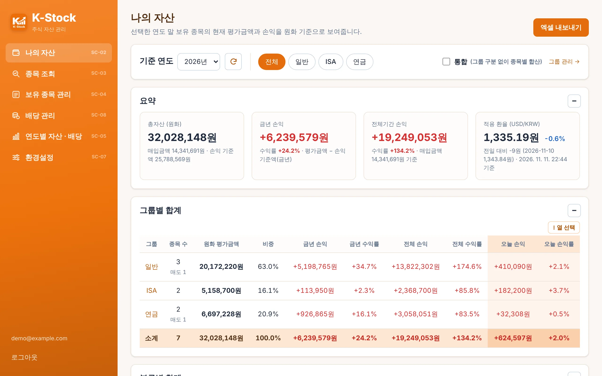
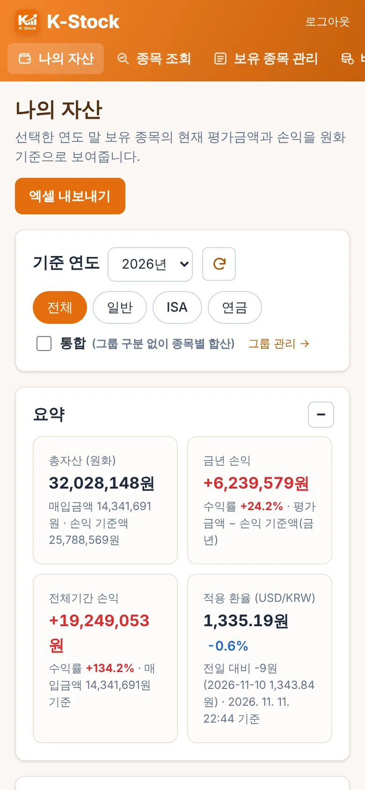
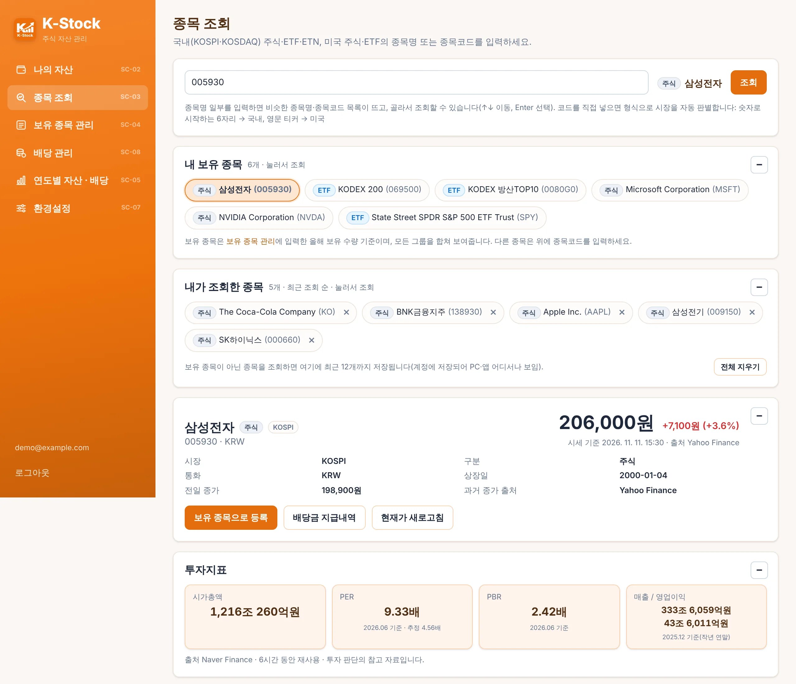
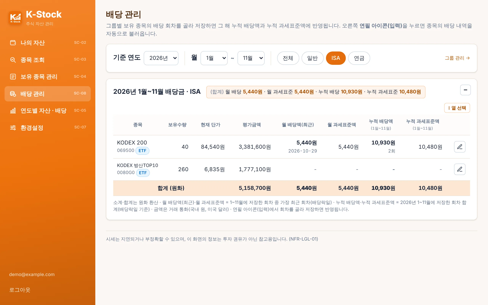
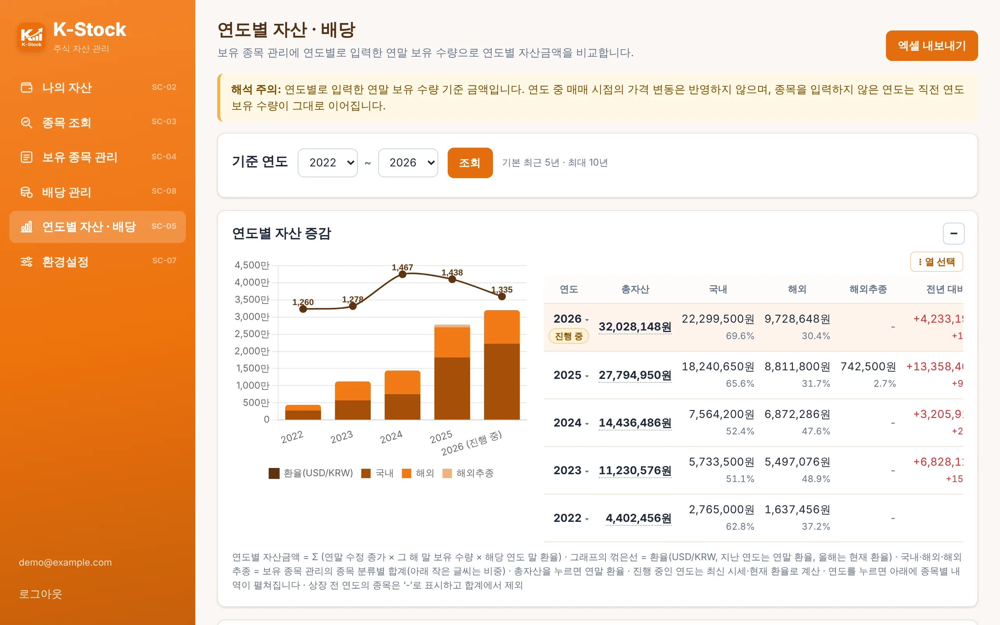
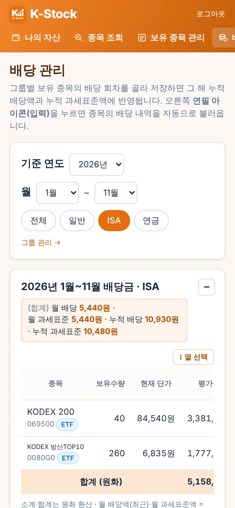

나의 자산
선택한 연도 말 보유 종목의 현재 평가금액과 손익을 원화로 환산해 보여 줍니다.
- 일반·ISA·연금처럼 계좌를 그룹으로 나눠 그룹별·분류(국내·해외·해외추종)별 합계
- 금년 손익, 전체기간 손익, 오늘 손익과 적용 환율
- 엑셀 내보내기, 보고 싶은 열만 고르는 열 선택

개인용 주식 자산 관리 앱
국내(KOSPI·KOSDAQ)와 미국 주식·ETF를 그룹별로 모아 평가금액과 손익, 배당, 연도별 자산 변화를 원화 기준으로 보여 줍니다. 데이터는 내 기기와 내 구글 드라이브에만 저장됩니다.

선택한 연도 말 보유 종목의 현재 평가금액과 손익을 원화로 환산해 보여 줍니다.

종목명이나 코드를 입력하면 시세와 기업 정보를 한 번에 확인합니다.

보유 종목의 배당 회차를 골라 저장하면 그해 월 배당과 누적 배당이 자동으로 계산됩니다.

연도별로 입력한 연말 보유 수량으로 자산과 배당이 어떻게 늘었는지 그래프와 표로 비교합니다.

연도별 보유 수량·매입 금액을 기록하고, 숫자 칸에 = 10+30 같은 수식을 쓸 수 있습니다.
휴대폰에 로그인된 구글 계정을 골라 구글 드라이브에 연결하면 휴대폰·PC의 데이터를 버튼 한 번으로 맞춥니다.
가족 등 다른 사용자에게 화면별로 조회·수정 권한을 나눠 줄 수 있습니다.
모든 데이터를 파일 하나로 저장하고 되살립니다.
여러 색상 테마와 한국어·영어 화면을 지원합니다.
휴대폰 세로 화면에 맞춘 배치와 접기·펴기 상자로 필요한 정보만 봅니다.
kstock-sync.json 하나만 읽고 씁니다(drive.file 권한). 드라이브의 다른 파일은 볼 수 없습니다.
Android 6.0 이상 휴대폰에 APK를 설치합니다. PC는 Node.js로 실행하는 버전을 씁니다.
앱에서 이메일과 비밀번호로 사용자를 만듭니다. 이 정보는 기기 안에만 저장됩니다.
보유 종목 관리에서 그룹과 연도별 보유 수량·매입 금액을 입력하면 나머지 화면이 채워집니다.
환경설정 → 기기 간 동기화에서 구글 계정을 골라 연결하면 다른 기기와 데이터를 맞출 수 있습니다.
시세는 지연되거나 부정확할 수 있으며, 앱의 정보는 투자 권유가 아닌 참고용입니다. 시세 출처: Yahoo Finance, 네이버 증권 등.
문의: GitHub 이슈